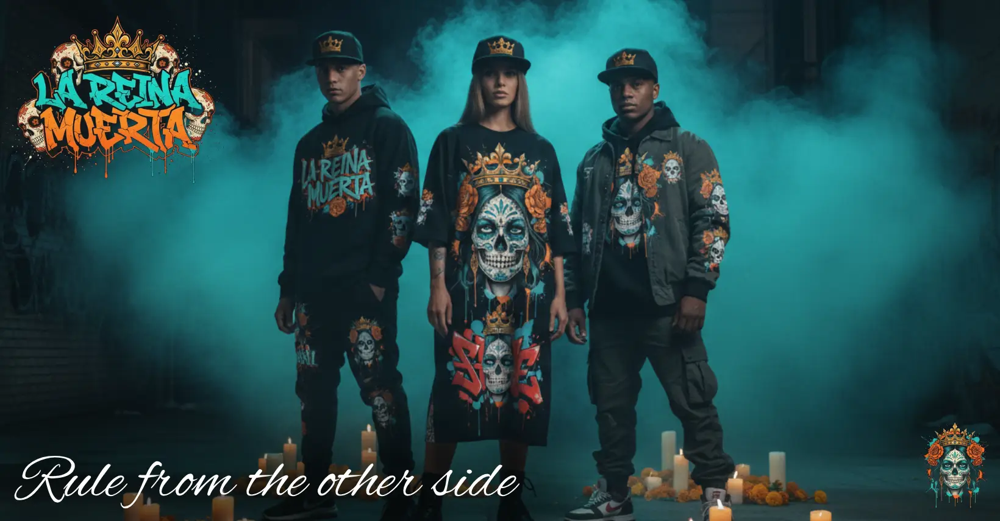
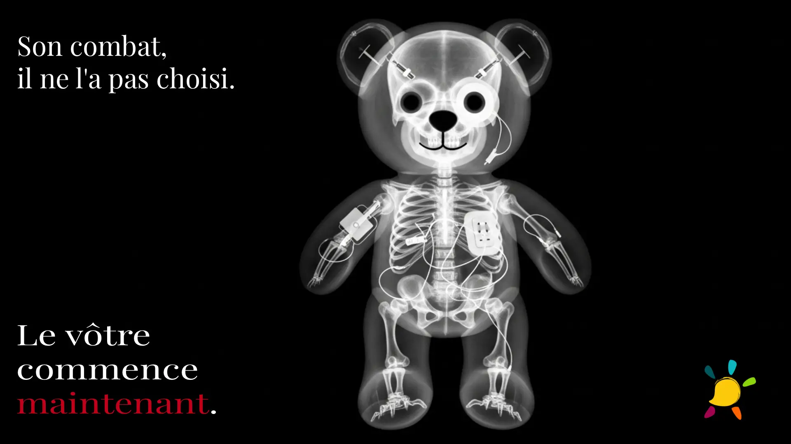
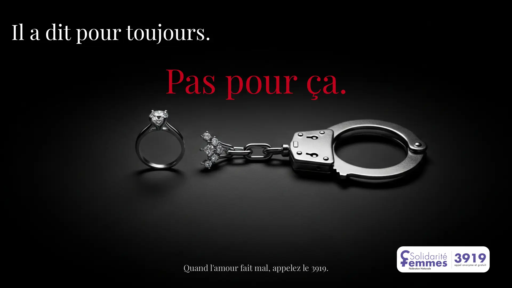
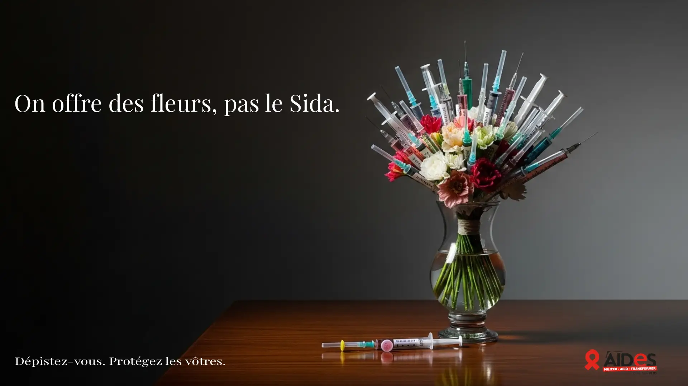
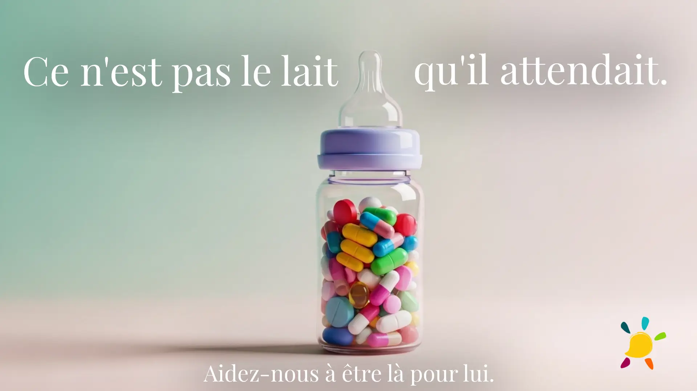
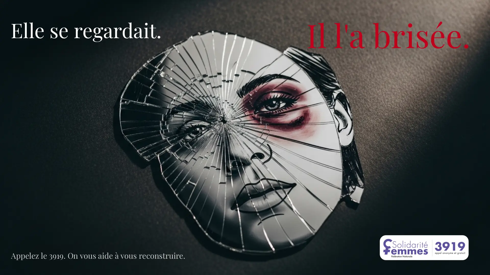

Technologie E-commerce
Architecture scalable, stack headless, performance web, intégrations API complexes. Je construis des plateformes qui tiennent dans le temps sous une charge réelle.
Head of E-commerce Tech & Expert en Influence Cognitive.
Je bâtis des architectures performantes basées sur les mécanismes du comportement.
Je n'optimise pas des pages. Je comprends pourquoi les humains achètent et je construis les systèmes qui en tirent parti.
Architecture scalable, stack headless, performance web, intégrations API complexes. Je construis des plateformes qui tiennent dans le temps sous une charge réelle.
Nudges, biais cognitifs, économie comportementale appliquée au funnel de conversion. Je comprends comment les décisions se prennent et je conçois des expériences qui en tiennent compte.
Décryptage des mécanismes cognitifs, biais comportementaux et nudges qui pilotent les décisions d'achat vus par un technicien qui les implémente.

Comment l'État et les géants du Web utilisent les sciences comportementales pour orienter nos choix sans jamais nous contraindre. Une analyse des mécanismes qui redéfinissent l'UX moderne.

Décryptage de la stratégie cognitive d'Apple. Comment le hardware et le software fusionnent pour créer une dépendance délibérée et transformer l'utilisateur en captif volontaire.

De la propagande classique aux algorithmes de recommandation, découvrez comment les techniques de persuasion ont évolué pour devenir l'infrastructure invisible de notre économie numérique.
Résultats mesurables. Code en production. Délais tenus.
[ Projet phare · 5 semaines · 2026 ]
Plateforme multi-univers React/TypeScript avec assistant IA RAG, outils propriétaires interactifs et top 1% de conversion dès le lancement.
[ Projet solo · 3 jours · 2026 ]
Journal sur la manipulation cognitive. 12 articles de fond, design sur mesure, scores Lighthouse exemplaires.
[ Outil SaaS · 2026 ]
Outil propriétaire de monitoring SEO suivi de positionnements, alertes régressions, tableaux de bord temps réel.
Chaque projet est aussi un objet de design. De la stratégie de marque aux visuels générés par IA, je définis et orchestre l'identité visuelle de bout en bout.
Un voyage cinématographique de 50 secondes à travers le Mexique, de l'histoire aztèque jusqu'à la mer de Tulum, en passant par la magie du Día de Muertos.
« 3,000 years ago, they turned death into a celebration. We never stopped. »
De zéro à une marque complète en une session. Concept, nom, logo, collection, lookbook, affiche de lancement et storyboard vidéo - entièrement orchestré avec l'IA comme levier de production.
Fusion Día de los Muertos × street art graffiti. Positionnement mid-range unisexe, palette turquoise/orange/or, sérigraphie signature Catrina couronnée.

« L'IA ne remplace pas la créativité. Elle l'accélère. »
Trois campagnes fictives générées par IA pour des causes humanitaires, SIDA, enfants malades, violences conjugales. Direction artistique, copywriting et génération visuelle.





« L'IA génère. Les règles strictes gouvernent. Le goût tranche. »
Série de visuels conceptuels pour Nike. Exploration d'une esthétique ultra-sombre, ciment, brutaliste décalée des codes habituels de la marque.


Campagne visuelle fictive pour la collab NOCTA. Esthétique nuit, luxe discret et énergie urbaine.


Campagne fictive autour de la saison des cerisiers. Poésie japonaise, douceur chromatique et voyage comme expérience sensorielle.


Visuels générés via Whisk & Flow (Google DeepMind). Concept purement fictif - non affilié à Japan Airlines.
Prêt à passer à l'action ?
Discutons de votre projet e-commerce, de vos axes d'optimisation et de comment la psychologie comportementale peut doubler vos résultats.